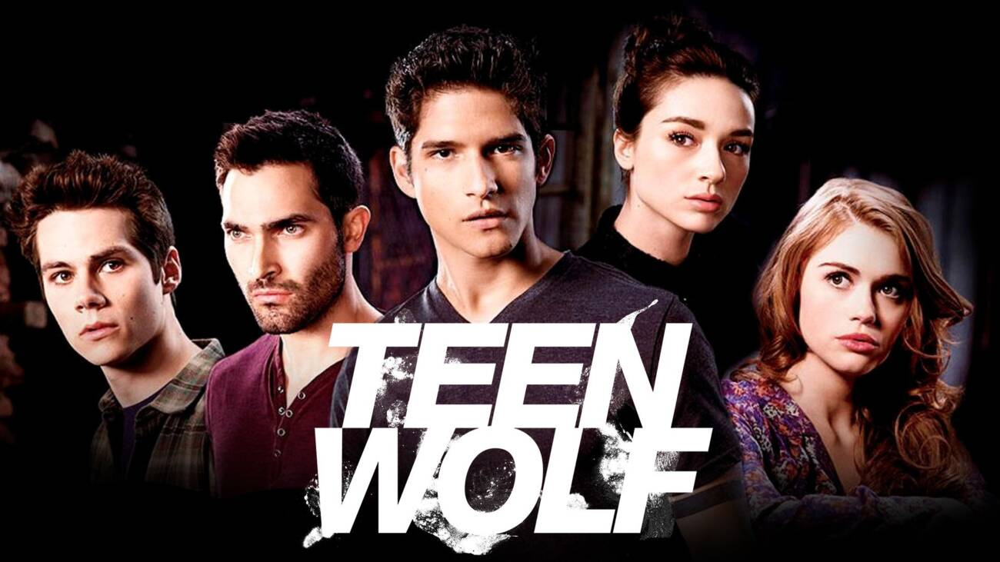
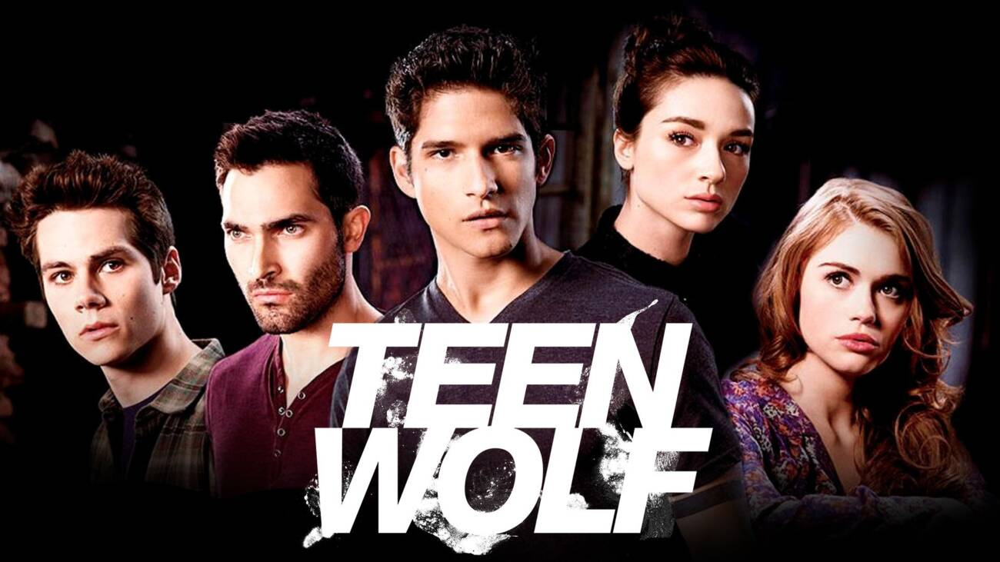

Há oito anos, a série “Stranger Things” chegava ao streaming da Netflix pela primeira vez. Desde então, a história que traz foco a um grupo de amigos da cidade fictícia de Hawkins se desenvolveu em outras três temporadas, que tornaram a obra um dos maiores sucessos da plataforma. A quinta e última parte da trama ainda está prevista para chegar em 2025.
Assistir Mais informacõesHá oito anos, a série “Stranger Things” chegava ao streaming da Netflix pela primeira vez. Desde então, a história que traz foco a um grupo de amigos da cidade fictícia de Hawkins se desenvolveu em outras três temporadas, que tornaram a obra um dos maiores sucessos da plataforma. A quinta e última parte da trama ainda está prevista para chegar em 2025
Gênero : Ação
Ano de lançamento: 2015


 
